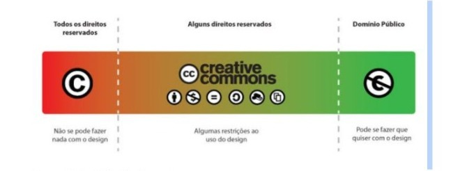
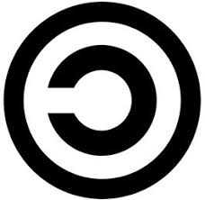
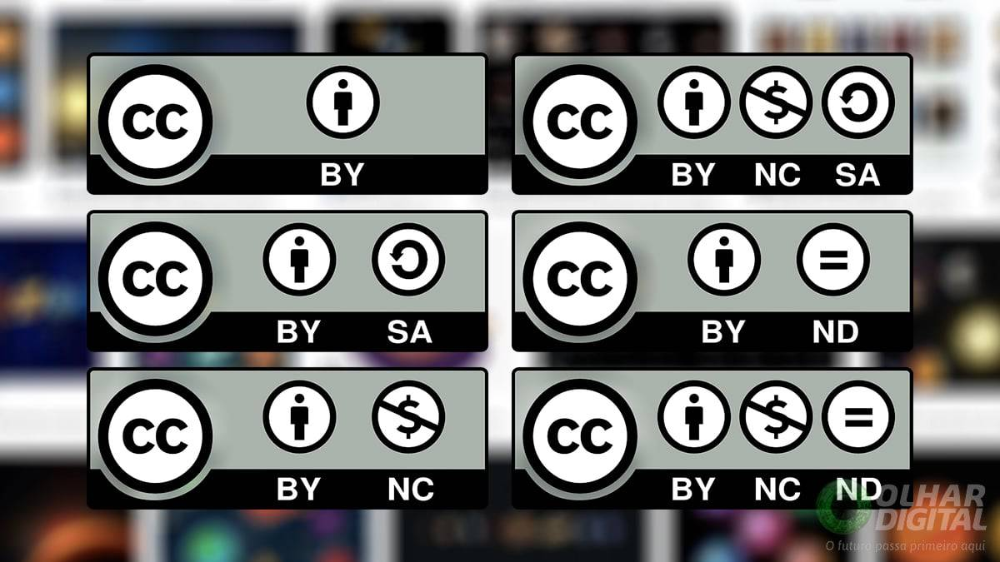

Site criado para documentar os conhecimentos desenvolvidos durante a impressionante aventura em Arquitetura de Hardware e Software.
Nesta parte você vai encontrar informações sobre Hardware.
Nesta parte você vai encontrar informações deliciosas sobre Software.
Fundamentalmente, um sistema operacional é um software, que pode ser o Linux, Windows, Android, macOS, UNIX, entre outros. No entanto, ele não resume aquilo que seus olhos conseguem ver ou ao que você consegue interagir. Em outras palavras, é um programa que conversa diretamente com o hardware da sua máquina. O sistema operacional assegura que os programas funcionem corretamente. Fonte
Sistema operacional (SO) é o software que gerencia tanto o hardware quanto os softwares de um computador ou dispositivo móvel. Instalado no disco rígido, funciona como um intermediário entre o usuário e o computador. Quando você digita um texto ou navega na internet, é o SO que interpreta esses comandos e os traduz em ações que o hardware pode executar. Fonte
1. O Windows NT foi considerado o primeiro sistema operacional Windows NT: Em novembro de 1985, a Microsoft lançou o Windows 1.0 oficialmente, como sua primeira tentativa de trazer para o público um sistema interativo. Ele era bastante limitado, vindo apenas com o bloco de notas, um relógio, a calculadora, o velho e antigo Paint, um joguinho chamado Reversi, um editor para cartões, o Microsoft Writer e outros programas de computação. Um de seus destaques é que ele contava com muitas cores, em um visual novo e chamativo. Ele também se destacou por ser o primeiro a utilizar o mouse para facilitar o uso e também com suporte a atalhos na tela pelos ícones e janelas. Porém, mesmo com essas melhorias, a Microsoft só declarou o Windows como um sistema operacional de fato com a chegada do Windows NT em 1993.
2. Briga de navegadores com a Netscape Netscape: O período entre 1995 e 1999, quando a Microsoft lançou o Windows 95 e logo depois o Windows 98, aconteceu a chamada Guerra dos Browsers, ou Guerra dos navegadores Web. Isso porque até então, com a chegada e popularização da internet, os navegadores começaram a surgir em opções cada vez mais diferenciadas e modernas. Nesse período, a Nestcape se tornou líder nesse mercado com seu software que tinha o nome de Netscape Navigator. Porém, quando a Microsoft lançou o Windows 95 que já vinha com seu navegador próprio, o Internet Explorer, a disputa se tornou bastante acirrada. Foi nessa época de 95 a 99 que a liderança virou e a Microsoft ultrapassou a Netscape, tirando sua coroa. A empresa até chegou a processar a Microsoft alegando que ela estaria usando táticas monopolistas, já que usava a sua liderança no mercado dos sistemas operacionais para trazer o Internet Explorer integrado a eles. Dessa forma ninguém queria mais baixar outro navegador por causa da praticidade de já ter um ali instalado.
3. Windows teria outro nome: Se dependesse de Bill Gates, o sistema operacional teria outro nome: Interface Manager. Segundo ele, o nome foi escolhido porque garante a possibilidade de manusear ações do sistema usando um mouse. Porém, o nome não chegou a ser usado graças a intervenção do chefe de marketing da empresa naquela época, Rowland Hanson. Foi assim que surgiu o nome Windows, que vem da palavra em inglês que significa Janelas. Obviamente, ele foi escolhido porque o sistema operacional era composto por várias janelas que separavam as operações. A Microsoft até teve certa dificuldade em oficializar esse nome no registro por ser uma palavra de uso comum, o que dificultava a patente, mas acabou dando certo no final. Fonte
De forma simples, o driver é um pequeno programa que permite que o sistema operacional do computador possa se comunicar com o dispositivo conectado a ele.
Basicamente faz com que um mouse, uma impressora e outros componentes possam ser interpretados pelo sistema e realizem suas ações da forma Fonte
3. Por fim, a título de curiosidade, às vezes podemos nos deparar com uma questão muito interessante: qual a diferença entre driver e drive? E a resposta é mais simples do que você pode pensar. O driver(com a letra "r" no final) é exatamente o programa que permite que software e hardware se comuniquem. Já um drive(sem a letra "r") diz respeito a unidades de armazenamento, ou seja: memórias internas ou externas como HD, SSD, pendrive e cartões de memória, além de discos como CD, DVD e Blu-Ray.Fonte
2. Sem drivers, o sistema operacional seria incapaz de enviar ou receber dados de forma correta para dispositivos como impressoras, placas de vídeo, teclados, entre outros. Fonte
3. Os componentes que precisam de drivers geralmente são:
Placa mãe. Placa de vídeo. Placa de áudio. Modem/placa de rede. Mouse. Teclado. Monitor. Impressora/Scanner.
Programa de computador ou software é um conjunto de instruções ou declarações a serem usadas direta ou indiretamente por um computador, a fim de obter um determinado resultado. Ele é composto por um código-fonte, desenvolvido em alguma linguagem de programação. Fonte
Origem do termo: O termo "software livre" foi popularizado nos anos 80 por Richard Stallman, fundador do Projeto GNU. Ele defendia a liberdade de usar, estudar, modificar e distribuir software. Licenças famosas: Uma das licenças mais conhecidas é a GPL (General Public License), que garante que qualquer software derivado de um programa GPL também deve ser livre. Colaboração global: O software livre permite que desenvolvedores do mundo todo colaborem em projetos. Um exemplo famoso é o Linux, que é mantido por milhares de contribuidores. Diversidade de uso: Software livre é usado em servidores, desktops e dispositivos móveis. Distribuições Linux como Ubuntu e Fedora são exemplos populares. fonte
Liberdade de uso: Usuários podem usar o software para qualquer propósito, sem restrições. Personalização: Como o código-fonte é acessível, é possível modificar o software para atender necessidades específicas. Distribuição: Usuários podem compartilhar o software livre com outros, ajudando a disseminar ferramentas e conhecimento. Colaboração: Projetos de software livre permitem que pessoas de diferentes lugares colaborem, melhorando a qualidade e a inovação. Custo: Em muitos casos, o software livre é gratuito, tornando-o uma opção acessível para indivíduos e organizações. Transparência e segurança: Com o código aberto, é mais fácil detectar e corrigir falhas de segurança. Fonte
O software proprietário pertence a um indivíduo ou empresa e não está disponível para modificação ou distribuição pública. Os usuários normalmente devem adquirir licenças para usar software proprietário, o que geralmente inclui restrições sobre como o software pode ser usado

Licença para aquisição perpétua. Esse é um dos tipos mais tradicionais de licença de uso para softwares. ... Licença para uso temporário. ... Licença para software livre. ... Licença Open Source. ... Licença para aluguel. ... Licença para SaaS.
fonteO copyright é a maneira mais recomendada de proteger os produtos, ideias e serviços de uma empresa. Com ele, é possível evitar pirataria e processar aqueles que copiam materiais de outras pessoas para ganhar dinheiro. Assim, oferece segurança aos produtores de conteúdo e ajuda a profissionalizar o mercado. fonte
Bom, como dissemos, a história do copyright surgiu em 1710, no Reino Unido, e tem a sua origem ligada a livros. Em resumo, ele dava direito de cópia de livros a autores e compradores para incentivar a aprendizagem, sem prejudicar os criadores intelectuais.
fonteComo usar o copyright? O registro do direito autoral é feito na Biblioteca Nacional, através do Escritório de Direitos Autorais (EDA). Com essa autorização em mãos, o autor decide como sua criação pode ou não ser utilizada
fonte Copyleft é um método geral para tornar um programa (ou outra obra) livre (free, em inglês, no sentido de liberdade, e não de “preço zero”) e exigir que todas as versões modificadas e extensões do programa também sejam livres. fonte
Enquanto o copyright é visto pelos mentores originais do copyleft como uma maneira de restringir o direito de fazer e distribuir cópias de determinado trabalho, uma licença de copyleft usa a lei do copyright de forma a garantir que todos que recebam uma versão da obra possam usar, modificar e também distribuir tanto a ...
fonteO copyleft diz que qualquer um que distribui o software, com ou sem modificações, deve passar adiante a liberdade de copiar e modificar novamente o programa. O copyleft garante que todos os usuários tenham liberdade. Copyleft também fornece um incentivo para que outros programadores contribuam com o software livre.
Creative Commons é um tipo de licenciamento que permite que designers, cinegrafistas, escritores e desenvolvedores web usem conteúdo sem pagar royalties por ele. De livros a fotos, vídeo a som, há uma variedade de tipos de materiais que podem ser usados, desde que atribuídos adequadamente
fonte Fundadores Lawrence Lessig Tipo organização não governamental Fundada 2001 Matriz Mountain View, California, Estados Unidos Pessoas-chave Catherine Casserly, CEO Foco Expansão de direitos de autor flexível e "razoável" Método Licenças Creative Commons Sítio http://creativecommons.org/